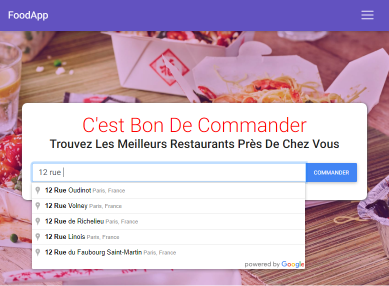
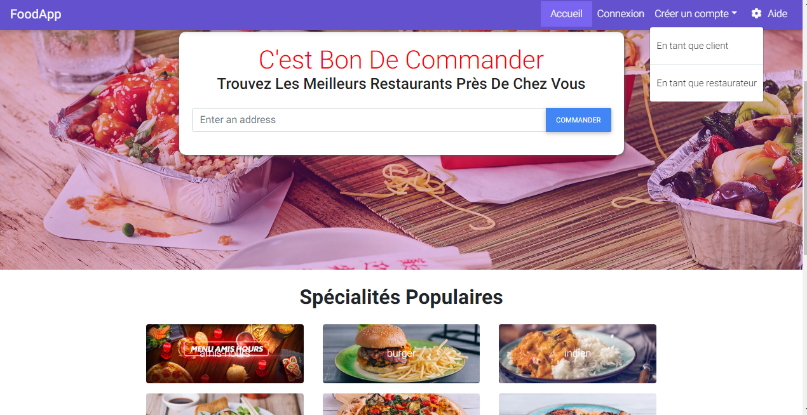

Mon stage de première année
j'ai éffectué mon stage du 27/05/2019 au 05/07/2019 au sein de la société DeboMarquage sis à Boulogne-Billancourt.J'ai au cours de ce stage principalement utilisé le logiciel Illustrator et appris des techniques de marquage.


Pour consulter entièrement mon rapport de stage cliquez ici
Ma deuxième année de stage
Mon deuxième stage s'est déroulé du 12/11/2019 au 13/12/2019 au sein de CONFLEDIS SAS(Consulting and Flexible Digital Solution) où j'ai occupé le poste de developpeuse web. Nous avons travailé en équipe sur un projet nommé Alorestoo. Alorestoo est une plateforme developpée sous Angular de reservation de restaurant en ligne et de livraison de plats cuisinés accessible par un site web et une application mobile.Pour réaliser ce projet nous nous sommes servis de nombreux outils tels que:
- Microsoft Teams: outil de travail collaboratif
- Git
- Nodejs
- SourceTree
- Trello
- Bitbucket
- Dropbox
- 
- 
Pour consulter ou telecharger mon cv cliquez ici